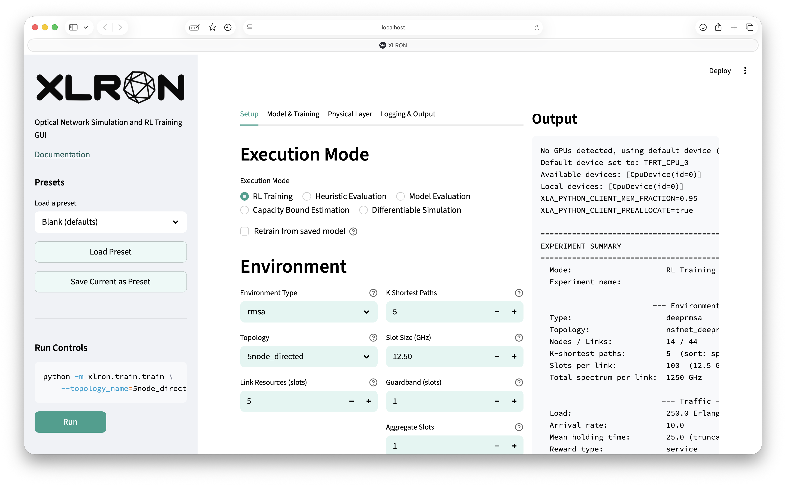

Welcome to XLRON


Live render of the per-link spectrum allocations made by a Graph Transformer agent trained with RL on DeepRMSA-NSFNET.
XLRON ("ex-el-er-on") is a JAX-based simulation framework for resource allocation in optical networks. It combines a fast simulation engine that runs entirely on accelerator hardware, an integrated PPO trainer, classical heuristics, capacity bound estimators, an end-to-end differentiable physical layer, and a browser GUI — all in one library.
If you are deciding whether XLRON is the right tool for your work, the short version is:
- It is the most comprehensive of the open-source optical-network simulation libraries — see Comparisons & Speed.
- It is fast: 222–1,494× faster end-to-end RL training than other libraries; up to \(6 \times 10^6\) steps/s on a single A100. See Comparisons & Speed.
- It includes an accurate ISRS GN physical layer model with distributed Raman amplification that agrees with state-of-the-art C+L-band experiments to within 0.5 dB. See Physical Layer.
- It is the first fully differentiable optical-network simulator: gradients flow through the entire pipeline, enabling gradient-based pump optimization and direct RSA optimization. See Differentiable Simulation.
- It ships all 119 real-world topologies from TopologyBench out of the box, including very large ones like USA100 and TataInd. See Topologies.
- It is the framework behind the first Graph Transformer trained with RL to consistently match or beat the strongest heuristics for dynamic RMSA. See Graph Transformer for RMSA.
- It exposes everything through both a CLI and a browser GUI designed to lower the barrier to entry. See GUI.
- It is fully tested and comprehensively documented — a unit-test suite covers the environments, training loop, heuristics, bounds, and GN model, and every flag, environment, and execution mode is documented on this site.
- The flat-flag CLI is designed to be driven by LLM coding agents as well as humans: every option is a single hyphenated flag, every parameter is documented, and the same interface is used by the GUI under the hood. See GUI.

Get started
- New here? Start with the Installation and Quick Start guides, then Understanding XLRON for the conceptual model.
- Looking to train an agent? See Training with PPO.
- Just want to evaluate heuristics? See Heuristic Evaluation.
- Doing physical-layer-aware simulation? See GN Model Physical Layer and the Differentiable DRA Pipeline.
- Estimating capacity bounds? See Capacity Bound Estimation.
Papers and reproduction guides
If you are here because you read one of our papers and want to reproduce a figure, the per-paper reproduction guides give the exact commands and scripts:
- XLRON: Accelerated Reinforcement Learning Environments for Optical Networks — OFC 2024
- Reinforcement Learning with Graph Attention for Routing and Wavelength Assignment with Lightpath Reuse — ONDM 2025 (arXiv:2502.14741) — Reproduce
- Reinforcement Learning for Dynamic Resource Allocation in Optical Networks: Hype or Hope? — JOCN 17(9), D1 (2025), DOI 10.1364/JOCN.559990, arXiv:2406.01919 — Reproduce
- Comparison of Dynamic Elastic Optical Network Capacity Bound Estimation Methods — submitted to ECOC 2026 — Reproduce
- XLRON: A Framework for Hardware-Accelerated and Differentiable Simulation of Optical Networks — in preparation — Reproduce
- Graph Transformers and Stabilized Reinforcement Learning for Large-Scale Dynamic Routing, Modulation and Spectrum Allocation in Elastic Optical Networks — in preparation (arXiv:2605.02075) — Reproduce
A consolidated list of papers with BibTeX entries lives on the Papers page.
Related projects
- TopologyBench — 119 real-world optical network topologies, all bundled with XLRON.
- Gymnax — gym-style API in JAX; XLRON's environment interface follows the Gymnax pattern.
- PureJaxRL — XLRON's PPO implementation derives from PureJaxRL.
- Stoix — multi-device sharding inspiration.
Contact and acknowledgements
Maintained by Michael Doherty (michael.doherty.21@ucl.ac.uk) at UCL. Supported by EPSRC grant EP/S022139/1 (CDT in Connected Electronic and Photonic Systems) and EPSRC Programme Grant TRANSNET (EP/R035342/1).